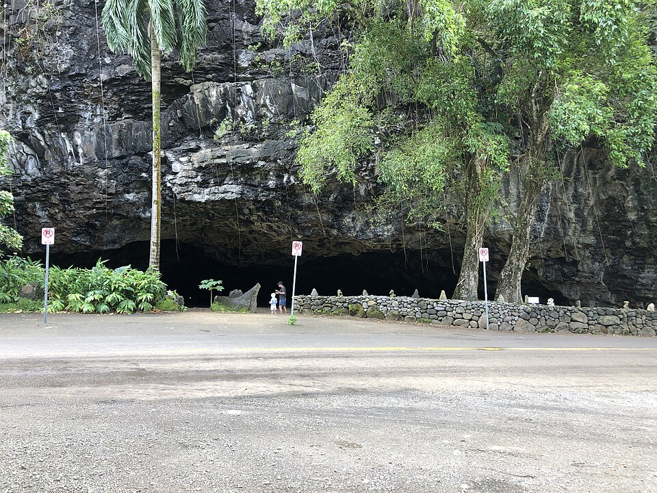

Maniniholo Dry Cave
Place: Maniniholo Dry Cave, Hāʻena, Kauaʻi
Type: Sea cave / geological landmark / legendary site
Story it tells: A massive coastal cave whose name preserves a Menehune legend while revealing thousands of years of geological change along Kauaʻi's north shore.

Maniniholo Dry Cave sits just inland from Hāʻena Beach Park on Kauaʻi's north shore. Maniniholo translates as "traveling manini," referring to the manini (convict tang), while sources claim the cave's name honors the legendary chief fisherman Maniniholo.
According to Hawaiian tradition, Maniniholo led the Menehune, the legendary master builders of Hawaiʻi. After the Menehune caught a great supply of fish in Hāʻena Bay, mysterious ʻeʻepa spirits stole the catch and disappeared into the mountainside. Maniniholo ordered his people to dig into the rock to pursue the thieves, creating the great cavern. Some traditions say the cave was once known as Kahauna (Stench Cave) because of the odor left behind after the defeated ʻeʻepa perished within.
Although many visitors refer to Maniniholo as a lava tube, it is actually a large marine cave carved into ancient volcanic rock. Thousands of years ago, the Pacific Ocean reached directly against the base of these cliffs, allowing pounding surf to hollow out the cavern. As sea levels changed and Kauaʻi slowly uplifted over time, the cave was left hundreds of feet inland, creating the dry cave seen today.
The cave continued to change even in modern times. During the powerful Aleutian tsunami of 1957, seawater surged deep into the cavern, dumping enormous amounts of beach sand across the cave floor. Visitors today walk atop those tsunami deposits, making the cave considerably shallower than it had been for generations before.
Beyond its legendary origins, Maniniholo Dry Cave likely served practical purposes for Native Hawaiians. Its broad, sheltered entrance provided a natural refuge where fishermen would store nets and canoes, travelers could rest along the rugged north shore, and families could seek shelter during storms. Located within the culturally significant ahupuaʻa of Hāʻena, the cave formed part of a landscape that also included important heiau, fishing grounds, and centers of traditional learning.
The cave lies at the base of Makana, the dramatic mountain associated with the modern nickname "Bali Hai." Historic accounts describe Makana as a place where skilled practitioners once hurled burning bundles of hau and pāpala wood from its summit after dark. Carried by rising winds, the glowing embers drifted slowly toward the sea, creating spectacular displays visible for miles along the coast.
Today, Maniniholo Dry Cave remains one of Kauaʻi's most accessible geological landmarks. Visitors can explore much of its broad entrance in just a few minutes, though the ceiling slopes steadily downward toward the rear of the cave. State signs remind visitors to respect the site by leaving rocks and cultural features undisturbed, preserving the natural beauty and traditions that have long been associated with Hāʻena.